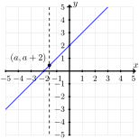
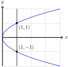

Determine whether an equation defines \(y\) as a function of \(x\text{.}\)
In this section, we study the basics of functions.
Definition2.2.1.Function.
A function, \(f \colon A \to B\text{,}\) is a rule that assigns to each element \(x \in A\) a unique element \(f(x) \in B\text{.}\)
The set \(A\) is the domain of \(f\text{,}\) the set \(B\) is the codomain of \(f\text{.}\) The range of \(f\) is the set of all output values
\begin{equation*}
f(A) = \left\{f(x) \;\middle\vert\; x \in A\right\}.
\end{equation*}
By convention, we will write \(y = f(x)\) to indicate that \(y\) is a function of \(x\text{.}\) We call \(x\) the independent variable and \(y\) the dependent variable because every choice of \(x\) from the domain of \(f\) determines a value \(y\) in the range that depends on that choice. In this case, we say \(y\) is a function of \(x\text{.}\)
Example2.2.2.
Find the domain and range of the function \(f(x) = 3x + 7\text{.}\)
Solution.
The domain of \(f\) is \(\R\) because for any real number \(x\text{,}\)\(3x + 7\) is always well-defined. The codomain of this function is also \(\R\) because for any real number \(x\text{,}\)\(3x + 7\) will also be a real number. To find the range, we want to describe the set
\begin{equation*}
\left\{3x + 7 \;\middle\vert\; x \in \R\right\}.
\end{equation*}
We can show this is \(\R\) by showing that for every real number \(y\text{,}\) we can find a number \(x\) such that \(3x + 7 = y\text{.}\) We simply solve this equation for \(y\) in terms of \(x\)
\begin{align*}
3x + 7 \amp = y \amp\amp \text{Subtract}\ 7\ \text{from both sides}\\
3x \amp = y - 7 \amp\amp \text{Divide both sides by}\ 3\\
x \amp = \frac{y - 7}{3}.
\end{align*}
For example, if \(y = 10\text{,}\) then this formula tells us this corresponds to the input
Find the domain and range of the function \(f(x) = x^2\text{.}\)
Solution.
The domain of \(f\) is \(\R\) because for any real number \(x\text{,}\)\(x^2 = x \times x\) is always well-defined. The codomain of this function is also \(\R\) because for any real number \(x\text{,}\)\(x^2\) is a real number. To find the range, we want to describe the set
\begin{equation*}
\left\{x^2 \;\middle\vert\; x \in \R\right\}.
\end{equation*}
Given a real number \(y\text{,}\) we want to determine whether the equation \(y = x^2\) can be solved for \(y\text{.}\)
When \(y = 0\text{,}\) there is exactly one solution: \(x = 0\text{.}\)
When \(y > 0\text{,}\) there are two solutions: \(x = \sqrt{y}\) and \(x = -\sqrt{y}\text{.}\)
When \(y \lt 0\text{,}\) there are no solutions because the square root of a negative number is not a real number.
This tells us the range of our function is the interval \([0, \infty)\text{.}\)
Whenever we define a new mathematical object, it is important to understand when two objects are the same. For functions with the same domain and codomain, we measure equality based on the output.
Definition2.2.4.Equality of Functions.
Two functions \(f \colon A \to B\) and \(g \colon A \to B\) are equal if for every \(x \in A\text{,}\)\(f(x) = g(x)\text{.}\)
We write \(f = g\) to indicate that \(f\) and \(g\) represent the same function.
Example2.2.5.
The functions \(f,g \colon \R \to \R\) defined by \(f(x) = \sqrt{x^2}\) and \(g(x) = \abs{x}\) are equal because
The functions \(f\) and \(g\) have the same domain and codomain, and
Just like an equation in the variables \(x\) and \(y\text{,}\) we will often want to visualize the functions we define.
Definition2.2.7.Graph of a Function.
Assume \(A \subseteq \R\text{.}\) The graph of a function \(f \colon A \to \R\) is the set of points
\begin{equation*}
\left\{(x, f(x))\;\middle\vert\; x \in A\right\} \subseteq \R^2
\end{equation*}
When the function we are considering is defined by an equation, the Graph of an Equation will coincide with the Graph of a Function. While most of the functions we consider will be defined by an equation in the variables \(x\) and \(y\text{,}\) it is not the case that all equations in \(x\) and \(y\) define \(y\) as a function of \(x\text{.}\)
Theorem2.2.8.The Vertical Line Test.
An equation in the variables \(x\) and \(y\) is defines \(y\) as a function of \(x\) if and only if every vertical line intersects the graph of the relation in at most one point.
Example2.2.9.
Consider the function \(f \colon \R \to \R\) defined by the rule \(f(x) = x + 2\text{.}\) We can verify this is a function in one of two ways. One way is to interpret the The Vertical Line Test algebraically.
From the Graph of an Equation, the graph of the vertical line \(x = a\) is the set
\begin{equation*}
\left\{(a,y) \;\middle\vert\; y \in \R\right\},
\end{equation*}
and the graph of \(f\) is the set of
\begin{equation*}
\left\{(x, x + 2) \;\middle\vert\; x \in R \right\}.
\end{equation*}
To say these graphs intersect is to say there is a point \((x,y)\) in the intersection of these two sets. The condition for membership on the graph of \(x = a\) determines the \(x\) value of such a point and the definition of the graph of \(f\) determines the \(y\)-coordinate:
\begin{equation*}
y = x + 2 = a + 2\text{.}
\end{equation*}
This tells us the line \(x = a\) intersects the graph of \(f\) at the single point \((a,a+2)\text{.}\)
We can more readily see this graphically in Figure 2.2.10.

Figure2.2.10.The graph \(y = x + 2\) and \(y = a\text{.}\)
Example2.2.11.
The equation \(x = y^2\) does not define \(y\) as a function of \(x\text{.}\)
Recall that for every positive number \(x\text{,}\) there are always two square roots: \(\sqrt{x}\) and \(-\sqrt{x}\text{.}\) This tells us the ordered pairs \((x, \sqrt{x})\) and \((x, -\sqrt{x})\) both satisfy the equation \(x = y^2\) For example, the ordered pairs \((1,1)\) and \((1,-1)\) satisfy
Since the definition a Function requires that each element of the domain corresponds to exactly one element of the codomain, we see this cannot be a function. That is, equation \(x = y^2\) fails the The Vertical Line Test.

Figure2.2.12.The graph of the equation \(x = y^2\) and the line \(x = 1\text{.}\)